UDN
Search public documentation:
MaterialEditorUserGuideJP
English Translation
中国翻译
한국어
Interested in the Unreal Engine?
Visit the Unreal Technology site.
Looking for jobs and company info?
Check out the Epic games site.
Questions about support via UDN?
Contact the UDN Staff
中国翻译
한국어
Interested in the Unreal Engine?
Visit the Unreal Technology site.
Looking for jobs and company info?
Check out the Epic games site.
Questions about support via UDN?
Contact the UDN Staff
マテリアル エディタ ユーザー ガイド
ドキュメント概要：Unreal マテリアル エディタを使用するためのガイドです。 Dave Burke? により作成。 Daniel Wright により更新。 Richard Nalezynski? により管理。はじめに
このドキュメントは UnrealEd のマテリアル エディタの使用法を説明するものです。さまざまなマテリアル式の説明に関しては、 マテリアル要約 を参照してください。新しいマテリアル式の説明に関しては、 マテリアル式の作成 を参照してください。マテリアルエディタの概要
マテリアル エディタを開く
マテリアルエディタを開くには、Generic ブラウザでマテリアルをダブルクリックしてください。エディタは 4 つのセクションに分かれており、以下のようにラベルが付いています。マテリアル エディタ概観
マテリアル エディタ レイアウト
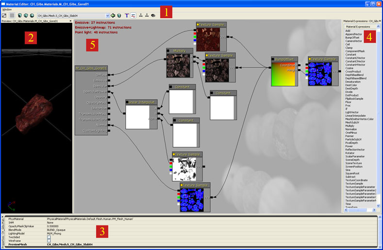
| 1 | メニュー バー? と ツールバー? 。 | 可視化とナビゲーション ツール。 |
| 2 | プレビューペイン? | メッシュ上のマテリアルをプレビュー。 |
| 3 | プロパティ ペイン? | マテリアルや選択されたマテリアル式ノードのプロパティ。 |
| 4 | マテリアル式リスト? | 利用可能なマテリアル式のリスト。 |
| 5 | マテリアル式グラフ? | シェーダ命令を作成するために、マテリアル式ノードはこのペイン内で繋がっています。 |
メニュー バー
ウィンドウ
プロパティ: プロパティペインを表示します。 プレビュー: プレビューペインを表示します。 マテリアル式: マテリアル式グラフを表示します。ツール バー
ツールバー ボタンのそれぞれの説明が、左から右へツールバーに現れるように続きます。| アイコン | 名前 | 説明 |
|---|---|---|
| ホーム | ベース マテリアル ノードがメインペインの左上の隅に表示されるように、マテリアル式グラフを移動します。 | |
| 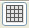 | グリッドのトグル | マテリアル プレビューペイン内で、背景のグリッドをトグルします。 |
| 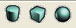 | 形状のプレビュー | マテリアルをプレビューする形状を標準から選択します。 |
| 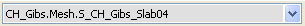 | プレビュー メッシュの選択 | プレビュー メッシュを、現在ロードされているすべての静的メッシュがリストされた、このドロップダウン リストから選択します。 |
| 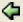 | 選択された StaticMesh をGeneric ブラウザで使用 | Generic ブラウザ内で静的メッシュを選択し、このボタンを押して選択したメッシュをプレビュー メッシュにします。 |
| 未使用の式のクリーン | マテリアルに繋がっていないすべてのマテリアル式ノードを削除します。 | |
| 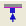 | 未使用コネクタの表示/非表示 | 何にも接続されていないマテリアル式コネクタを表示/非表示します。 |
| 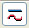 | カーブ 接続のトグル | カーブと直線の接続をトグルします。 エディタ パフォーマンスではこのフラグを無効化してください。 |
| リアルタイム マテリアル ビューポートのトグル | 有効化された場合は、プレビュー メッシュ上のマテリアルをリアルタイムでアップデートしてください。 エディタ パフォーマンスではこのフラグを無効化してください。 | |
| リアルタイム式ビューポートのトグル | 有効化された場合は、それぞれのマテリアル式ノードのマテリアルをリアルタイムでアップデートしてください。 エディタ パフォーマンスではこのフラグを無効化してください。 | |
| 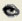 | 式リアルタイム プレビューのトグル | このボタンはマテリアル式の bRealtimePreview フラグのグローバル トグルです。 有効化された場合は、ノードが追加、削除、接続、切断、される度に、またはプロパティ値が変わると、すべての副次式のシェーダがコンパイルされます。 エディタ パフォーマンスではこのフラグを無効化してください。 式のプレビュー? セクションを参照してください。 |
プレビュー ペイン
マテリアル プレビュー ペインは、メッシュに適用された編集されているマテリアルを表示します。左のマウス ボタンでドラッグすることにより、メッシュが回転します。真ん中のマウス ボタンでドラッグすることによりパンができます。右のマウス ボタンでのドラッグでズームできます。[L] の長押しと左マウスボタンでのドラッグでライトの方向が回転します。 プレビュー メッシュは、関連付けられたツールバー操作 (形状ボタン、[Select Preview Mesh] (プレビュー メッシュの選択) コンボ、[Use Selected StaticMesh] (選択された StaticMesh の使用) ボタン) を使用することで変更できます。マテリアル エディタで次回マテリアルが開かれたときに、同じメッシュでプレビューできるように、プレビュー メッシュはマテリアルとともに保存されます。プロパティペイン
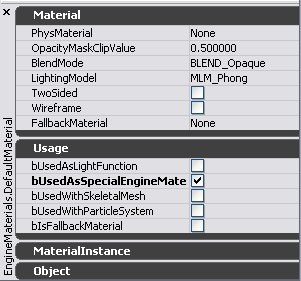
このペインは、選択されたマテリアル式のプロパティウィンドウを含みます。式が選択されていない場合、編集されているマテリアルのプロパティが表示されます。Material(マテリアル)
Usage
Usage プロパティフラグは、異なるメッシュ型、またはレンダリングテクニックのマテリアルを使用できるようにします。 これにはいつかのカテゴリが存在します。 フラグはレンダリングビヘイビアを制御するため、互いに他のフラグと排他的です。- bUsedAsLightFunction
- bUsedWithFogVolumes
- bUsedWithDecals
- bUsedWithGammaCorrection - シェーダの最後にガンマ補正をします。これはLDRUIシーンに適用されたマテリアルのみに必要です。
- bUsedWithMaterialEffect - マテリアルが不透明でもscene depth (シーンデプス)およびscene color (シーンカラー)から読むことができるようにします。
Material Instance(マテリアルインスタンス)
Object(オブジェクト)
マテリアル式ペイン
このペインは、ドラッグ & ドロップでマテリアル内に設置されたマテリアル式のリストを含みます。新しいマテリアル式ノードを設置するには、設置する式のタイプを左クリックして、カーソルをグラフペインにドラッグし、離してください。マテリアル式グラフペイン
このペインは、このマテリアルに属するすべてのマテリアル式のグラフを含みます。マテリアルで使用されているシェーダ命令の数が、左上の隅に表示されます。命令の数が少ないほど、マテリアルのコストは低くなります。ベースマテリアル ノードに接続していないマテリアル式ノードは、マテリアルの命令カウント (コスト) に寄与しません。操作
マテリアル エディタ内の操作は、概して UnrealEd 内のその他のツールの操作と同じです。例えば、マテリアル式グラフは、他のリンクしたオブジェクトエディタと同じように操作できますし、マテリアルプレビューメッシュは、他のメッシュ ツールのように方向を合わせることができます。マウスの操作
| 背景でのクリックドラッグ | マテリアル式グラフのパン |
| マウス ホイール | ズームイン、ズームアウト |
| 左、右マウス ボタンでのドラッグ | ズームイン、ズームアウト |
| オブジェクトをクリック | 式/コメントの選択 |
| オブジェクトを Ctrl + クリック | 式/コメント選択のトグル |
| Ctrl + ドラッグ | 現在の選択/コメントの移動 |
| Ctrl + Alt + ドラッグ | ボックス選択 |
| Ctrl + Alt + Shift + ドラッグ | ボックス選択 (現在の選択に追加) |
| コネクタのクリックドラッグ | 接続の作成 (コネクタ、または変数で離す) |
| 背景で右クリック | 新しい式メニューを開く |
| オブジェクトを右クリック | オブジェクト メニューを開く |
| コネクタを右クリック | オブジェクト メニューを開く |
| コネクタを Alt + クリック | コネクタへのすべての接続を切断 |
| プレビュー ペイン内で L + ドラッグ | プレビュー ライトの方向の回転 |
キーボードの操作
| Ctrl + C | 選択した式のコピー |
| Ctrl + V | ペースト |
| Ctrl + W | 選択したオブジェクトの複製 |
| Delete | 選択したオブジェクトの削除 |
| Ctrl + Z | 元に戻す |
| Ctrl + Y | やり直し |
| スペースバー | すべてのマテリアル式プレビューを強制的にアップデート |
| C + 左クリック | ComponentMask |
| S + 左クリック | ScalarParameter |
| Enter | (適用のクリッキングと同様) |
| Shift + C + 左クリック | 選択の周りにコメントボックスを作成 |
| E + 左クリック | 電源 |
| R + 左クリック | ベクトル反転 |
| U + 左クリック | テクスチャ座標 |
| V + 左クリック | ベクトルパラメータ |
ホットキー
よく使われるマテリアル式タイプを設置するホットキーが存在します。ノードにドロップするには、ホットキーを押しながら左クリックをします。ホットキーは以下の通りです。| A | Add |
| B | BumpOffset |
| D | Divide |
| I | If |
| L | LinearInterpolate |
| M | Multiply |
| N | Normalize |
| O | OneMinus |
| P | Panner |
| S | Subtract |
| T | TextureSample |
| 1 | Constant |
| 2 | Constant2Vector |
| 3 | Constant3Vector |
| 4 | Constant4Vector |
マテリアルでの作業
式のコメント
コメントは、マテリアルが何をしているかをドキュメントするのに非常に良い方法です。これにより、何がマテリアルを複雑化したかを理解するのがより容易になります。コメントは関連付けられたノードの上に青のテキストで表示されます。コメントはズーミングに依存せずレンダリングされ、複雑なマテリアル グラフの操作を容易にします。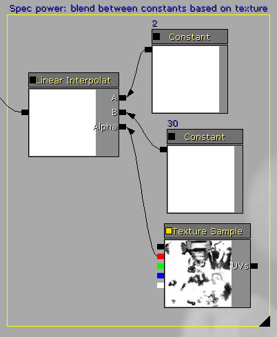
ノードの “Desc” プロパティにテキストを入力することで、マテリアル式ノードの個々にコメントを付けることができます。 いくつかのノードを選択し、[C] を押すことで、ノードのグループにグループ コメントを割り当てることができます。“New Comment (新しいコメント)” ダイアログにコメント テキストを入力し、[OK] を押してください。選択されたノードはコメント フレーム内でグループされます。グループ コメント内のノードは、グループ コメント テキストにドラッグすることで移動できます。コメント フレームの右下の隅にある黒い三角形をドラッグすることで、フレームのリサイズができます。グループ コメント内のいかなるノードはフレームと共に動くので、既存のフレームに新しいノードを含むようにリサイズすることができます。 コメントを選択し、プロパティ ウィンドウを使い、”Text (テキスト)” プロパティを変更することで、コメントの名前の変更ができます。式のプレビュー
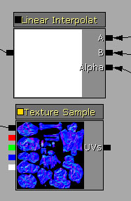
マテリアル エディタのノードは、左上の隅に小さなボックスを含みます。このボックスはノードの bRealtimePreview プロパティを示します。黄色は有効化、黒は無効化されていることを示します。 いかなる方法 (ノードが作成、削除、接続される、プロパティが変更されるなど) でもマテリアル変更があった場合、bRealtimePreview が有効化されたすべてのノードは、そのシェーダをリコンパイルします。このリコンパイルは、そのノードで描かれたマテリアル プレビューが最新であるために必要です。しかし、これらの中間シェーダのリコンパイルには (特にマテリアルがたくさんのノードを含んでいる場合は) 時間がかかります。ワークフローの障害を避けるためにも、TextureSample 以外のすべてのノード タイプで bRealtimePreview はデフォルトで無効化されています。 スペースバーを押すことで、すべてのプレビューを強制的にアップデートできます。従って、なるべく多くのノードで bRealtimePreview を無効化することで、速いイテレーションを得ることができ、スペースバーを押すことで、いつでも変更を見ることができます。 ノードの左上の隅のボックスをクリックする、または選択されたノードのプロパティ ウィンドウを使用することで、ノードの bRealtimePreview を有効化することができます。 [Toggle Expression Realtime Preview] (式リアルタイム プレビューのトグル)ボタンですべてのノードのグローバルトグルが可能です。マテリアル参照
マテリアルプロパティ
PhysMaterial
物理マテリアルは、このマテリアルと関連付けられています。 物理マテリアル を参照してください。OpacityMaskClipValue
これは、マスク付マテリアルの OpacityMask 入力がピクセルごとにクリップするリファレンス値です。OpacityMaskClipValue より高い値はパスし、ピクセルが描かれます。低い値の場合は、失敗となりピクセルは破棄されます。BlendMode
BlendMode は、現在のマテリアル (ソース カラー) の出力がレンダリング時にどのようにして既に framebuffer (デスティネーション カラー) 内にあるマテリアルと組み合わさるかを記載します。- BLEND_Opaque – ファイナル カラー = ソース カラーです。このブレンド モードはライティングと互換性があります。
- BLEND_Masked – OpacityMask < OpacityMaskClipValue の場合、ファイナル カラー = ソース カラーです。そうでない場合、ピクセルは破棄されます。このブレンド モードはライティングと互換性があります。
- BLEND_Translucent – ファイナル カラー = ソース カラー x 半透明 + デスティネーション カラー x (1 – 半透明) です。このブレンド モードは動的ライティングと互換性が ありません 。
- BLEND_Additive – ファイナル カラー = ソース カラー + デスティネーション カラーです。このブレンド モードは動的ライティングと互換性が ありません 。
- BLEND_Modulate – ファイナル カラー = ソース カラー x デスティネーション カラーです。このブレンド モードは、decal マテリアルでない限り、動的ライティング、またはフォグと互換性が ありません 。
LightingModel
ライティング モデルは、ファイナル カラーを作るマテリアルの入力方法 (例：Emissive, Diffuse, Specular, Normal) の組み合わせを決定します。- MLM_Phong – デフォルトのライティング モデルであり、ディフューズとスペキュラーがピクセルごとに演算されます。
- MLM_NonDirectional – ピクセルごとのディフューズで、スペキュラーはありません。ライティング式でサーフェス法線はファクタではありません。現時点で、これは動的リット マテリアルのみで動作します。
- MLM_Unlit – 放射のみです。このライティング モデルは、いかなる透明なブレンド モードに必要となります。
- MLM_SHPRT – 非推奨です。
- MLM_Custom - 任意のライティング モデルの使用を可能にします。 カスタム ライティング をご覧ください。
- MLM_Anisotropic – 毛髪やブラシ済みマテリアルなどのアニソトロピックマテリアルに使用されます。 アニソトロピックライティング をご覧ください。